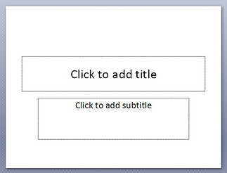
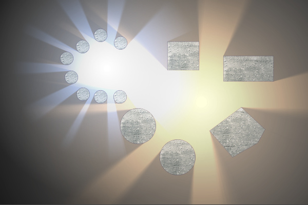
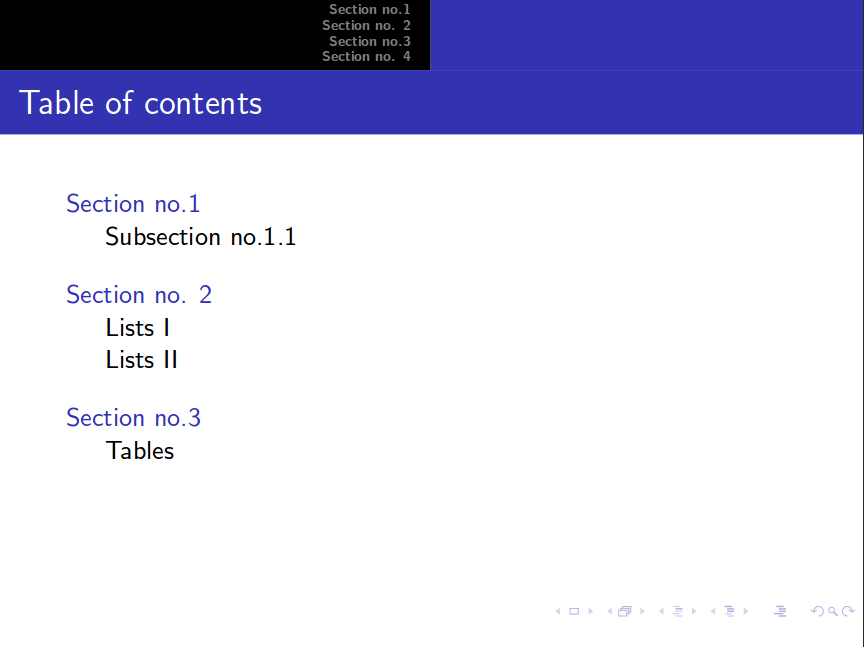
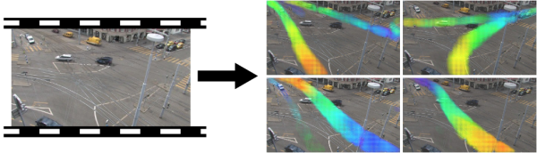
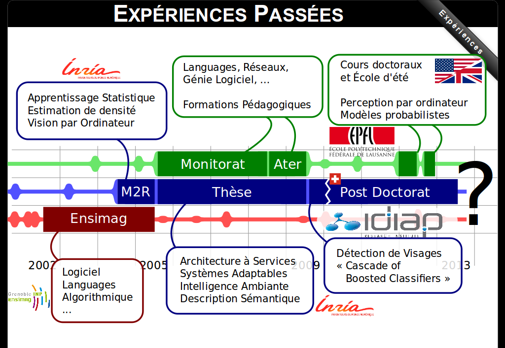
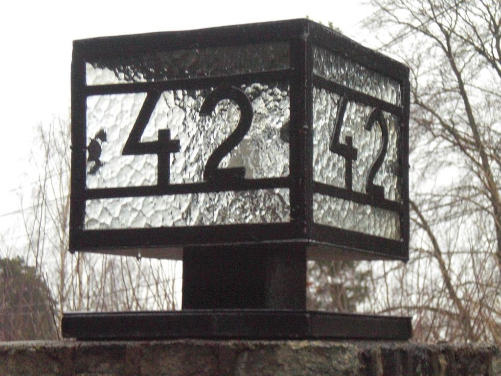
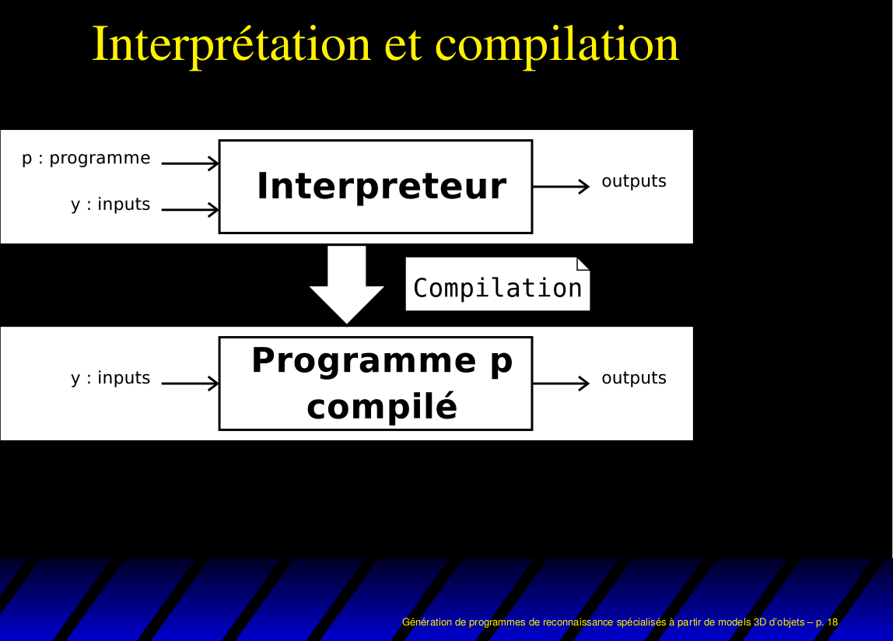

The deck is loading, thank you for your patience…






@web presentations==[s] @anim-appear:800:.label =2004 − Powerpoint/OpenOffice/…=[s] * Inconsistent style // no easy way to enforce constant position, scale etc * Portability issues // even in 2011 and with latest versions! * VCS :( // git svn etc... :( * Lock-in // not easy to reuse outside * Media :( // will the video play properly? =2005 − Latex Beamer=[s] // may look like a good idea if you use latex for papers  * It's LATEX :) ** VCS[comment] ** math, latex skills, etc [comment] ** full programming language [comment] * It's LATEX :( ** how to style?[comment] ** how to include (SVG) graphics?[comment] ** need compilation[comment] ** produces static pdfs[comment] =2005 − Web Pages Generation=[s] // more as an experimental idea @svg:full: media/generate-pages.svg 800px 555px @anim-appear:300: svg | #generates | #links | #morelinks // I did not actually do it (just explored) * [comment][overlay] ** a generator ** produces set of interlinked pages ** no animations ** no caching ** not so better than latex =2005 − Eric Meyer's S5 click it=[s] // I used S5, many persons too. Browser limitations at the time: SVG (printing), fitting @CSS!: .s5iframe {position: absolute; top: 70px; left: 50px; width: 700px; height:505px; } * [comment] ** not really animated ** no fitting to window ** limited SVG support from browsers =2006-2012 − Hacked S5=[s] // probably as everybody, I customized S5 @anim-attribute:400:.myvid:width:800px @anim-play: .myvid @anim-pause: .myvid @anim-attribute:400:.myvid:width:250px @anim-appear:400: ul * Operational * Feature rich: SVG, animations, ... // presenter view, fitting, ... (better than any alternative) * But, used by me only * Some limitations ** compiled[comment] ** technically tricky (to code and for browser) injection of style and js in SVG[comment] =2012 − The Questioning=[s] * [comment][overlay] ** it works, but I'm alone
(for maintenance, themes, etc) ** others get traction (and are nicer by default) ** new cool techs : touch screens, tons of JS libs… take some time to support ** ** THE answer: always collaborate with others!!! ** select the most extensible existing framework ==A story about
web presentations
(back to the present)==[s2] @anim-appear:800:.label =The Landscape of Frameworks=[s2] // some are more demos than frameworks @CSS!:li {font-weight: bold;} @CSS!:li.light.y {opacity: .5} @CSS!:li.light {opacity: 0} @CSS!:.funky li.deck-current, .funky li.deck-current a {color: red} * [funky] ** powerpoint[light] ** openoffice[light] ** google docs[light] ** keynote[light] ** xhtmlpres(mine)[slide] ** S5[slide] ** Prezi[light][slide] // to much motion? difficult to reuse ** impress.js[slide] // prezy using CSS3 ** deck.js[slide] // my choice ** html5rocks[slide] // demo of latest ** animateyourhtml5[slide] // demo by Martin Gorner (very nice presentation) ** reveal.js[slide] // quite recent, a decent choice ** Yours?[slide]#landscape-slide =The Chosen One: deck.js= @CSS!: .lower {padding-top: 60px;} * Motivation[slide][lower] ** nice attractive themes // even if not used by me, it attracts people, + nice transitions ** small, stable core // tested, used and intentionally limited ** encourages extensions // most basic features are actually already extensions ** active community // at least, extensions exist * Work[slide] ** integrate my features // a lot was missing (proper fitting, SVG load/style/anim, ...) ** write new extensions ** (hack the core... not needed actually) // Problem: deck.js appears to be dead because it's core is stable for months ==deck.js Basics==[d] @anim-appear:800:.label =deck.js Architecture=[d] // Designed to be modular/extended @CSS!:.full {position:absolute; top:45px;} @svg:full media/deckjs-architecture.svg 800px 555px @anim-appear:1: @#z1 + @anim-appear:450: #yours | @#z2 | #tree | #deps + #legend | #core | #extgoto | #themes =deck.js Example click to try=[d] // view frame source if interested (not critical for the rest) @CSS!: .deckjsexampleiframe {position: absolute; top: 70px; left: 50px; width: 700px; height:505px; } * [comment][overlay] ** include + call deckjs with options ** theme = css(s) ** transition = css ** extensions = css + js + html-snippet =deck.js: Include Core=[d][smallfont][noh2margin] // include libs,core,style /// call deck potentially with an option object @ ==Extensions for deck.js==[e] @anim-appear:800:.label =Extensions in the Wild=[e] * deck.js wiki ** ~33 extensions listed ** ~20 authors listed * More possibilities ** Extensions in the wild ** Many javascript libraries // d3, webgl, webcl, illuminated.js, box2d ** SVG // see the animateyourhtm5 demo, it's worth it ** CSS, SMIL =deck.js ext: code highlight=[e] // used in previous slides * deck.js-codemirror * Leveraging CodeMirror ** syntax highlighter written in JS ** over 60 languages =deck.js ext: included ones=[e][smallfont][noh2margin] // default ext (the verbose way): css + js + html snippet /// try 'g' and 'm' @
@
=deck.js ext.: includedeck=[e][smallfont]
// The amazing loader (cleans presentation file, shortens boilerplate code)
@anim-appear:400: div.CodeMirror
@
=deck.js extensions: fit=[e]
// proper fitting using CSS3, click inside to give focus
@CSS!: .deckjsmineiframe {position: absolute; top: 70px; left: 50px; width: 700px; height:505px; }
=deck.js extensions: clone=[e][noh2margin]
// to have presenter tools around the presentation
* clone, comments, stopwatch/timer
* [comment]
** when you press 'c' you get a clone window
** you show the second window on the projector
** you keep the first on your screen (with notes)
** control the first window
** get a "copy" of your cursor on the second
* [comment]
** also a timer to know how fast you go
** and a stopwatch when rehearsing
** (move the mouse to the right edge of the window)
** (logs are saved in html5 localStorage)
=deck.js extensions: step, anim=[e]
// give the focus to play the demo presentation (nb: the video is missing)
@CSS!: .deckjsmineiframe {position: absolute; top: 70px; left: 50px; width: 700px; height:505px; background: black;}
=deck.js extensions: simplemath=[e]
// simple script that produces mathml (out-of-the-box support in firefox)can use mathjax also (but needs heavy install for offline use)[twolines] @CSS!: span.latex {font-size: 20px;} * Latex notation for equations, etc // powerful notation for equations, etc. @e=mc^2 (\frac{x^2}{y^3}) [\begin{array}{cc} \sqrt{x} & 2 \\ 3 & x^4 \end{array}] @
@ f(n) = \left\{ \begin{array}{l l} n/2 & \mbox{if } n \mbox{ is even}\\ -(n+1)/2 & \mbox{if } n \mbox{ is odd} \end{array} @
@a^2 + \frac{1}{\sqrt{a^2 + \frac{1}{\sqrt{a^2 + \frac{1}{\sqrt{a^2 + b^{\infty}}}}}}} @ =deck.js extensions: svg=[e] // Vector graphics (12k for the smiley) /// give focus to see presentation @CSS!: .deckjsmineiframe {position: absolute; top: 70px; left: 50px; width: 700px; height:505px; background: black;} =deck.js ext.: smartsyntax=[e]#smartdemo // shorter way of writing slides, knows about extensions (e.g., anim) @CSS!: .inred {color:red;} @CSS!: textarea {width: 600px; height:160px; font-size: 20px;} @CSS: .smartsyntaxcode {font-size: 18px; line-height:1.2em; border: 1px solid darkgreen; padding: 5px;} * Markdow inspired syntax // but markdown is limited (no easy way for adding classes and ids) * Adds some features *# easy slide block creation *# easy addition of classes and ids[inred] *# extension specific “tags” @
=deck.js extensions: smartsyntax=[e]#smartdemo
* Markdow inspired syntax
* Adds some features
*# easy slide block creation
*# easy addition of classes and ids[inred]
*# extension specific “tags”
@
=deck.js ext.: smartsyntax=[e]
// easily animate any html or svg element + play/pause videos (even with a remote control) (even with some clones)[twolines]
@CSS!: li.inred {color:red;}
@CSS!: div.hasSVG.floatright {float:right; margin-right:150px; margin-top:-140px;}
@CSS!: .deckjsmineiframeincorner {position: absolute; right: 0px; bottom: 0px; width: 160px; height:120px; overflow: hidden; border-radius: 20px; background: black;}
@CSS!: textarea {width: 600px; height:160px; font-size: 20px;}
@CSS!: tt.onclick {color: darkred;}
@* Markdow inspired syntax
* Adds some features
*# easy slide block creation
*# easy addition of classes and ids[inred]
*# extension specific “tags”
@
=deck.js extensions: smartsyntax=[e]
* Example[inred]
@CSS!: .inred {color: red;}
@SVG:myclass,floatright media/smiley.svg 300px 300px
@anim-appear:400: #innerEye1 | #innerEye2 | -#innerEye1 + -#innerEye2
@anim-appear:1000: #innerEye1 + #innerEye2 + #shadow
@anim-play: .myvideo
@anim-pause: .myvideo
@
* Example#bullet
@SVG:myclass,floatright media/smiley.svg 300px 300px
@anim-appear:400: tt:nth-child(1) + h2
@anim-appear:400: tt:nth-child(3) + #bullet
@anim-appear:400: tt:nth-child(5) + #bullet +
@anim-appear:400: tt:nth-child(7) + .myclass
@anim-appear:400: tt:nth-child(9) + #innerEye1
@anim-appear:400: tt:nth-child(10) + #innerEye2
@anim-appear:400: tt:nth-child(11) + -#innerEye1 + -#innerEye2
@anim-appear:1000: tt:nth-child(13) + #innerEye1 + #innerEye2 + #shadow
@anim-appear:400: tt:nth-child(15) + %play:.myvideo
@anim-appear:400: tt:nth-child(17) + %pause:.myvideo
=deck.js extensions: short list=[e]
* Base
** status, navigation
** menu, goto
* Mine[slide]
** includedeck, fit, clone, "comments", timer
** maths, SVG, step, anim, autoshow
// autoshow == the loopy thing on the first page
** smartsyntax
* Other[slide]
** codemirror, blank, search, automatic, annotate, lazyload, …
=deck.js extensions: how to=[e]
@CSS!: span.tt {font-family: console; font-size: 20px;}
* Get included by the user
** do initialization on DOM ready
** deck.js ready: $(document).bind('deck.init', function() {…})
* Add and use options[slide]
** $$.extend(true, $$[deck].defaults, {…} );
** var opts = $[deck]('getOptions');
* Interact with deck.js (and your DOM)[slide]
** listen to events: $(document).bind('deck.change', …)
** act on deck.js: $$[deck]('getSlides') $$[deck]('next') …
** …
==Wrap up==[w]
@anim-appear:800:.label
=Summary, Discussion=[w]
* Why web presentations?
** portable (need a decent browser)
** tuning friendly (reuse web skills, if any)
// BUT do not need to know web at all (not even html...)
** git friendly (plain text)
** modern looking (media, animations, styles)
** ! no visual editor (yet)
// some actually starting to appear (slid.es, dahu screencast)
=Summary, Discussion=[w]
* Why deck.js?
** stable and used
** clear extension policy
** lot of amazing extensions
// production ready, scaling, ...
** dizziness free (vs prezi (flash), impress.js)
// deck.js can do funky transitions and funky 3D css transforms but it is not the norm* Example[inred]
@CSS!: .inred {color: red;}
@SVG:myclass,floatright media/smiley.svg 300px 300px
@anim-appear:400: #innerEye1 | #innerEye2 | -#innerEye1 + -#innerEye2
@anim-appear:1000: #innerEye1 + #innerEye2 + #shadow
@anim-play: .myvideo
@anim-pause: .myvideo
@
and reuse is easier when no absolute layout[twolines] =Take-Home Message=[w] * Use a web presentation framework * Preferably deck.js :) * Use and write extensions // we all gain by sharing * Clone from github or get a bundle =Attributions=[attrib] @CSS!:.attributed {width: 110px; padding:0; line-height: 1em;} @CSS!:.attributed a {margin: 0; padding:0;} @CSS!:.attributed a img {height: 30px; margin: 0; padding:0;} @CSS: .deck-container .slide.attrib ul {font-size: 20px;} * CC Images @ =Links=[links] @CSS: .deck-container .slide.links ul {font-size: 20px;} * The “landscape of frameworks” slide * Death by powerpoint: metrics on presentations, how to avoid boring ones * Authoring Slides using HTML: my comparison of some frameworks * deck.js, list of extensions, and examples of my extensions (with zip) ==Thank you for your attention==[title-slide][end-slide][deck-status-fake-end] @CSS!: .infoperso {position: absolute; left:150px; top: 200px; font-size: 32px; z-index: 1000;}


@remiemonet
click-me ;-p @nospam.com
Web Presentations, deck.js and Extensions
− − − /
__:__